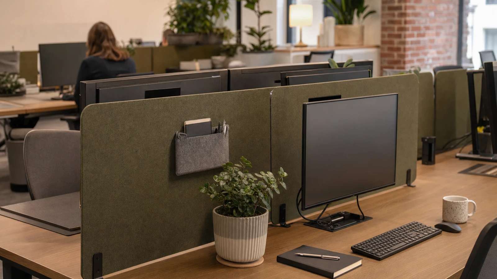

Balancing Privacy and Openness in Modern Workspaces
Open offices promise collaboration, transparency, and a vibrant team culture, but they often compromise personal privacy, leading to distractions and discomfort. The challenge lies in creating spaces that offer privacy without isolation, where employees can focus without feeling cut off from their colleagues. Visual boundaries, thoughtfully designed to maintain sightlines, are key to achieving this balance. Rather than erecting high, opaque walls, a well-planned use of low and translucent screens can create a sense of personal space while still encouraging spontaneous interactions.
As organizations increasingly prioritize employee wellbeing alongside productivity, the design of workspaces must evolve beyond the binary choice of open or closed layouts. Privacy in the workplace is not just about physical separation; it encompasses psychological comfort, control over one's immediate environment, and the ability to manage sensory input effectively. Employees who lack privacy often report higher stress levels, decreased job satisfaction, and reduced concentration. Therefore, achieving a nuanced balance is essential for both individual performance and overall organizational health.
Integrating privacy solutions into open offices requires a multidisciplinary approach, combining architecture, interior design, ergonomics, and behavioral science. For instance, understanding how people interact with space and each other informs the placement and design of dividers, seating arrangements, and communal areas. When done well, this balance can transform the workspace into a flexible environment that supports diverse work styles, from focused solo tasks to dynamic group collaboration.
Visual Boundaries: Defining Space Without Closing Doors
Visual boundaries in open offices serve as gentle cues, helping each team member mentally delineate their workspace. Instead of imposing rigid barriers, designers are now favoring solutions that subtly separate areas through materials and form. Translucent panels made of frosted acrylic, mesh, or fabric screens soften the line between personal and communal zones. They block direct line-of-sight, reducing visual noise and distractions, but still allow natural light and peripheral awareness to flow freely. This preserves a sense of connection and reduces feelings of confinement, which is crucial for maintaining morale in open-plan layouts.
A practical approach is to install these screens at a seated eye level, around 42 to 48 inches, which is high enough for privacy during focused work but low enough to enable easy peer communication. Adjustable dividers that can tilt or move also add a layer of flexibility, allowing employees to tailor their own protected spaces depending on task demands.
Beyond standard materials, innovative options such as sound-absorbing panels with translucent properties are gaining popularity. These combine visual privacy with acoustic benefits, addressing one of the most common complaints in open offices: noise distractions. By integrating materials that both filter light and dampen sound, workplaces can significantly elevate the quality of private spaces without compromising openness.
Another dimension to consider is the spatial rhythm created by these visual boundaries. Rather than uniform dividers, varied heights and transparency levels can create a dynamic environment that subtly signals zones for different activities. For example, lower transparent screens may mark individual desks, while taller frosted panels can define quiet zones or focus pods. This layering helps employees orient themselves within the office and intuitively understand social expectations tied to each space.
Encouraging Collaboration Through Thoughtful Design
While privacy is essential, the open office’s primary goal remains fostering collaboration. Low and translucent screens can help channel interactions rather than block them. For example, having dividers with writable surfaces encourages impromptu brainstorming without forcing a team to huddle in conference rooms. Visual openness supports awareness of team members’ presence, sparking spontaneous conversations and quick problem-solving sessions.
Designing shared zones adjacent to these semi-private cubicles—like casual seating areas or standing meeting points—ensures that employees don’t feel isolated even when working behind a divider. This spatial layering supports a dynamic flow where focus and collaboration alternate fluidly, reinforcing a positive and productive team culture.
Moreover, the integration of technology within these spaces further enhances collaborative potential. Interactive whiteboards, digital screens, or shared devices placed near semi-private areas encourage seamless knowledge sharing. When visual boundaries are low and translucent, team members can easily glance up to engage or offer input, facilitating a culture of openness and responsiveness.
Importantly, encouraging collaboration through design also involves considering the diversity of communication styles within a team. Some employees may thrive in casual, open interactions, while others prefer more structured or asynchronous collaboration. By providing a variety of spaces—ranging from semi-private pods to open lounges—employers can accommodate different preferences, making collaboration inclusive and effective for all.

The Role of Light: Transparency and Comfort
Light is more than just illumination; it shapes mood and perception of space. In open offices, maximizing natural light is critical for wellbeing and productivity. Using translucent screens allows daylight to diffuse gently throughout the workspace, avoiding the harsh shadows or closed-off atmosphere that opaque barriers can cause. This transparency also fosters a welcoming environment where employees feel less confined.
Additionally, strategically positioned lighting complements these screens to reduce glare and eye strain. Task lighting mounted on adjustable arms allows workers to customize their immediate lighting conditions, further personalizing their micro-environments within the open plan.
Daylight harvesting strategies can be integrated with the use of translucent dividers. By allowing natural light to penetrate deeper into the office, energy consumption for artificial lighting decreases, supporting sustainability goals. Moreover, exposure to natural light is linked to better circadian rhythms, reducing fatigue and improving overall cognitive function.
Consider also the color temperature and light layering within these environments. Cooler light tones can enhance alertness during daytime work, while warmer tones in collaborative zones promote relaxation and social engagement. Adjustable lighting systems can respond dynamically to time of day and employee preference, enhancing comfort in spaces defined by visual boundaries.
Cultivating Team Culture with Design that Respects Individual Needs
Open offices thrive on a strong team culture, but this culture depends on respecting individual work styles and privacy requirements. Incorporating low and translucent dividers signals a respect for personal boundaries without shutting down communication. Employees feel valued when they have control over their environment and can retreat momentarily for focused work.
Moreover, these design elements can be customized with colors, textures, and branding to reflect the company’s identity, subtly reinforcing team spirit. Personalizing workstations while maintaining a cohesive visual theme strengthens belonging and pride among staff.
Beyond aesthetic customization, including elements such as plants, artwork, or personal storage within these divider spaces can enhance comfort and wellbeing. These touches help humanize the workspace, making it feel less institutional and more supportive of individual expression.
Additionally, fostering a culture that values privacy as a component of respect can improve interpersonal dynamics. When employees understand that seeking quiet or solitude is part of healthy work habits, it reduces stigma around retreating behind dividers and normalizes varied work rhythms. Training managers to recognize and support these needs further embeds privacy into the organizational culture.
Choosing the Right Desk Dividers for Your Open Office
Selecting effective desk dividers requires balancing form and function. Materials should be durable yet light, easy to clean, and adaptable to different seating arrangements. Translucent options like frosted glass or polycarbonate offer privacy without sacrificing airflow and openness. Low screens help maintain conversations at eye level, and adjustable models accommodate various work modes.
For those interested in exploring the best options available, comprehensive reviews and buying guides can offer valuable insights on what products align with different office needs. A curated selection can be found here, with practical advice on installation and maintenance to optimize workspace dynamics.
When choosing desk dividers, consider additional features such as integrated cable management, accessory hooks, or modularity for reconfiguration. These enhancements increase usability and help maintain tidy workstations, which contribute to a sense of control and professionalism.
Cost-effectiveness is also a key factor, especially for larger organizations. Investing in high-quality dividers that combine durability, aesthetics, and functionality can yield long-term benefits by reducing the need for frequent replacements and supporting employee satisfaction.
Finally, involve employees in the selection and layout process whenever possible. Gathering feedback on preferences and pain points ensures that the chosen solutions meet real-world needs, fostering buy-in and smoother implementation.
Conclusion: Privacy Without Isolation is Achievable
Achieving privacy in an open office does not mean erecting walls that divide teams. Instead, visual boundaries that incorporate low and translucent screens strike a delicate balance, providing personal space and encouraging collaboration. By thoughtfully integrating these elements with natural light and adjustable lighting, companies can foster a supportive environment that enhances focus and team culture alike.
Businesses seeking to refine their office layouts with practical and stylish desk dividers can discover well-reviewed options to match their goals. For further inspiration on office organization tools that complement these solutions, visit this resource to explore innovative badge holders and workspace accessories.
Ultimately, the future of workspaces lies in adaptability and empathy—designs that acknowledge the diversity of human needs and provide flexibility to navigate between concentration and connection. Investing in privacy without isolation is not merely a spatial decision but a commitment to cultivating environments where every employee can thrive.